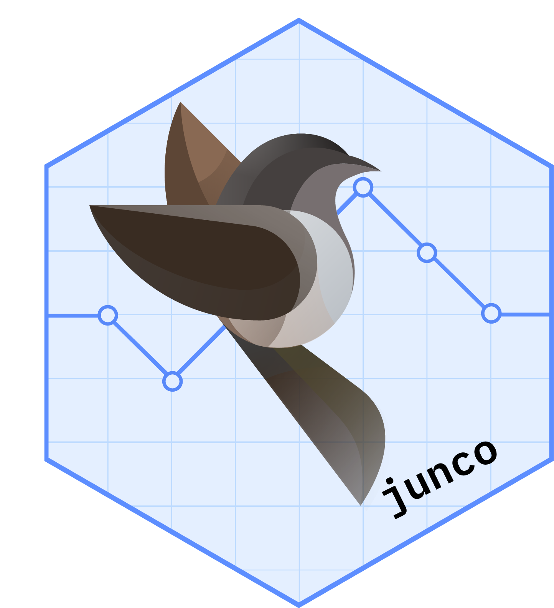

Summary Statistics for Filtered Data with Label
Source:R/a_summary.r
c_summary_subset_label.Rd![[Experimental]](figures/lifecycle-experimental.svg)
A wrapper around a_summary_j() that filters the data prior to execution
and prepends a label to the resulting summary statistics object.
Usage
c_summary_subset_label(
df,
labelstr,
.var,
.spl_context,
subset_expr,
label,
label_indent_mod = 0L,
...
)Arguments
- df
(
data.frame)
data set containing all analysis variables.- labelstr
(
character)
label of the level of the parent split currently being summarized (must be present as second argument in Content Row Functions). Seertables::summarize_row_groups()for more information.- .var
(
string)
single variable name that is passed byrtableswhen requested by a statistics function.- .spl_context
(
data.frame)
gives information about ancestor split states that is passed byrtables.- subset_expr
(
expressionorNULL)
Logical expression used to subset rows ofdfbefore analysis. Evaluated in the context ofdf. Defaults toexpression(rep(TRUE, nrow(df))), meaning no filtering.- label
(
stringorfunction)
A label to be added to the output. If a function is provided, it must accept a single argument.spl_contextand return a character string.- label_indent_mod
(
integer(1))
Indentation level applied to the label row.- ...
Additional arguments passed to
a_summary_j().
Value
An object returned by a_summary_j() with an additional label applied.
Details
The function first applies row filtering via filter_df_prior_afun(),
then computes summary statistics using a_summary_j(), and finally
attaches a label to the resulting object.
Examples
df <- data.frame(
USUBJID = rep(1:6, each = 2),
AVISIT = rep(c("Baseline", "Day 1"), 6),
AVAL = c(1, 3, 2, 9, 13, 19, 15, 23, 43, 56, 24, 32),
ABLFL = rep(c(TRUE, FALSE), 6),
BASE = rep(c(1, 2, 13, 15, 43, 24), each = 2),
CHG = c(0, 2, 0, 7, 0, 6, 0, 8, 0, 13, 0, 8)
)
df
#> USUBJID AVISIT AVAL ABLFL BASE CHG
#> 1 1 Baseline 1 TRUE 1 0
#> 2 1 Day 1 3 FALSE 1 2
#> 3 2 Baseline 2 TRUE 2 0
#> 4 2 Day 1 9 FALSE 2 7
#> 5 3 Baseline 13 TRUE 13 0
#> 6 3 Day 1 19 FALSE 13 6
#> 7 4 Baseline 15 TRUE 15 0
#> 8 4 Day 1 23 FALSE 15 8
#> 9 5 Baseline 43 TRUE 43 0
#> 10 5 Day 1 56 FALSE 43 13
#> 11 6 Baseline 24 TRUE 24 0
#> 12 6 Day 1 32 FALSE 24 8
c_summary_subset_label(
df = df,
.var = "CHG",
subset_expr = expression(ABLFL),
label = "Change from Baseline",
.stats = c("n", "mean_sd")
)
#> RowsVerticalSection (in_rows) object print method:
#> ----------------------------
#> row_name formatted_cell indent_mod row_label
#> 1 0 Change from Baseline
#> 2 n 6 0 n
#> 3 mean_sd 0.00 (0.000) 0 Mean (SD)